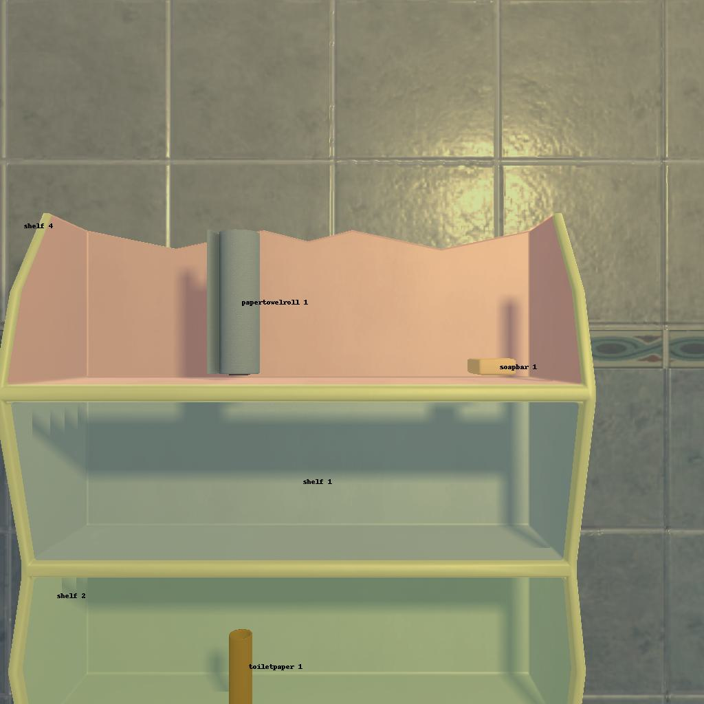

---------------------------------------------------------task: 25---------------------------------------------------------
--------------------------------------------------------------------------------------------------------------------------------------------------------------------
--------------------------------------------------------------------------------------------------------------------------------------------------------------------
Step:--------------------------------------------------------------------------10-------------------------------------------------------------------------------
----------------------------------------
VLM Prompt:
Image1:
Image2:
Image3:
**Instruction**
1. Analyze the provided image to identify all visible household objects, focusing on those relevant to the task description "find two dishsponge and put them in cart."
2. Use the analysis of the image and the task hint "The agent must find an object of the desired type, pick it up, find the correct location to place it, put it down there, then look for another object of the desired type, pick it up, return to previous location, and put it down there with the other object." to answer the question: what is the most reasonable action in the choices for the task description "find two dishsponge and put them in cart"?
4. Decide and write the answer using the template: The answer is: (i): , where i is the real number. If there is no desired object in the image, search every place based on **Initial Observation** to find the object. And if no one is exactly correct, choose a similar answer.
**Initial Observation**
You are in the middle of a room. Looking quickly around you, you can see bathtub (1), bathtubbasin (1), cart (1), toilet (1), garbagecan (1), toiletpaperhanger (1), shelf (1-4), sink (1), sinkbasin (1), handtowelholder (1)
**Answer Choices**
(1): go to bathtub 1
(2): go to bathtubbasin 1
(3): go to cart 1
(4): go to toilet 1
(5): go to garbagecan 1
(6): go to toiletpaperhanger 1
(7): go to shelf 2
(8): go to shelf 3
(9): go to sink 1
(10): go to sinkbasin 1
(11): go to handtowelholder 1
(12): take papertowelroll 1 from shelf 1
(13): take toiletpaper 1 from shelf 1
(14): take soapbar 1 from shelf 1
(15): examine shelf 1
**Answer**
Let's think step by step by following the instructions.
----------------------------------------
----------------------------------------
Original Response:
The task is to find two dishsponges and put them in a cart. First, we need to identify if there are any dishsponges visible in the images provided. Looking at Image 1, Image 2, and Image 3, there are no dishsponges visible on any of the shelves. The objects we can see are a papertowelroll, a soapbar, and an empty toiletpaper roll.
Since no dishsponges are visible in the images provided, we must search every place based on the Initial Observation to find the object. The most reasonable action from the answer choices that aligns with our task of finding dishsponges would be to examine the areas where such items are likely to be found. In a typical household, dishsponges might be found near the sink. However, since the answer choices do not include an "examine" action for the sink or sinkbasin, we need to choose the closest relevant action.
The closest relevant action from the choices provided would be to go to the sink, as dishsponges are often located there for washing dishes.
The answer is: (9): go to sink 1.
----------------------------------------
----------------------------------------
>>> Refine Original VLM Response and Get Pure Action: go to sink 1
----------------------------------------
-----------------------------------------------------------------
Running time: 12.598871231079102 seconds
Total Money: 16.238920000000004
-----------------------------------------------------------------
-----------------------------------------------------------------
Text Observation:You arrive at loc 10. On the sink 1, you see a faucet 1, a toiletpaper 2, and a soapbar 2.
-----------------------------------------------------------------
UNSUCCEED